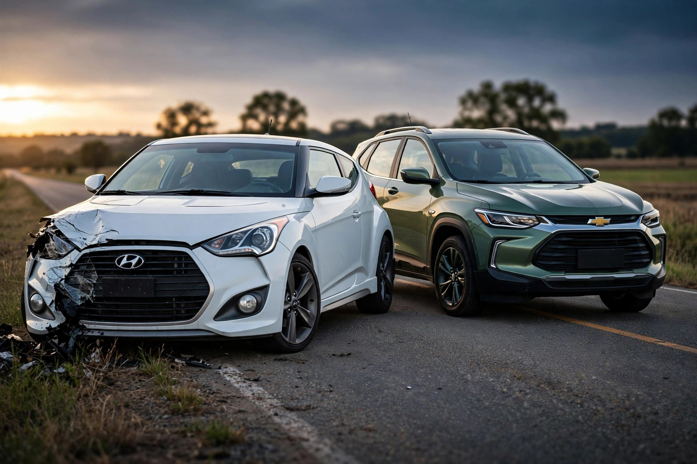

The Two Deadliest Vehicles Have the Soberest Drivers. That's the Problem.

Let's talk about what happens in the first 150 milliseconds when a 2,800-pound hatch hits something it was never designed to handle. FARS 2014-2023 shows Hyundai Veloster dies at 8.54 deaths per 100M VMT and Chevrolet Tracker at 7.83, the two highest rates in the entire database[1], yet their drivers test positive for alcohol or drugs far less often than the sports cars they get lumped with.
Impairment data flips the script. Veloster drivers in fatal crashes were any-impaired 17.4 percent of the time, 10.2 percent alcohol, 9.4 percent drugs[2]. Tracker drivers were any-impaired 12.7 percent, 10.5 percent alcohol, 5.9 percent drugs[2]. Compare that to Mustang at 21.9 percent impaired with a lower rate of 6.02, Corvette at 26.2 percent impaired, CTS at 25.9 percent, Corvette's entire reputation built on horsepower and poor decisions but it still kills less often per mile than a Veloster driven by sober commuters.
Physics explains what toxicology cannot. IIHS has documented for years that smaller, lighter vehicles offer less protection because there is less structure to absorb energy and less mass to win the momentum exchange[3]. Veloster curb weight sits around 2,800 pounds, Tracker around 2,900, both riding on short wheelbases with minimal crush space. When those vehicles meet a 4,500-pound SUV or a bridge abutment, the first 150 milliseconds are not about horsepower, they are about whether the A-pillar holds and whether the restraint system can manage a deceleration pulse that is fundamentally more violent in a light car. It mostly cannot. That's the judgment.
National context makes the outlier status impossible to ignore. NHTSA projects 36,640 deaths in 2025, down 6.7 percent from 39,254 in 2024, rate 1.10 per 100M VMT, the second lowest ever behind 1.08 in 2014, with fifteen consecutive quarterly declines since Q2 2022[4]. Every region down, 39 states down. Yet Veloster and Tracker sit at 8.54 and 7.83, roughly seven times that national rate, in a year when even motorcyclists improved 8 percent. Small vehicles remain vulnerable even when IIHS tries to push rear-seat improvements, and the May 2026 round of 16 new tests where only Palisade and Prius earned Top Safety Pick+ proves that moderate overlap rear-seat protection still trips up modern designs[5]. If 2026 vehicles struggle, a 2004 Tracker with no side curtains and no ESC until the 2012 mandate had no chance.
Methodology matters here because low-volume models invite skepticism. Rate equals deaths divided by estimated fleet multiplied by average annual miles from NHTS, scaled to 100M VMT. Fleet estimates for Veloster and Tracker are 87,500 each, VMT estimates 700 million and 1,094 million respectively, yielding rates 8.54 and 7.83. Even if fleet is off by 20 percent, which is plausible for discontinued models where many units are junked, the rate stays above 6.5, still top three. Impairment equals any positive BAC or drug in FARS toxicology for drivers in fatal crashes. Testing is incomplete, not every driver gets tested, but testing rates are broadly similar across passenger vehicles, so relative ranking holds. Veloster had 489 drivers in fatal crashes in the dataset, Tracker 573, sufficient for stable percentages.
Strongest counterargument deserves full strength. These are cheap vehicles driven by young, rural, lower-income drivers on higher-speed roads, factors not captured in toxicology. Their high rates reflect who drives them and where, not how they protect. Fleet estimates for Tracker are noisy, actual VMT could be lower if survivors are parked, inflating rate. IIHS size-weight correlation is confounded by price and demographics. Also, Tracker is a zombie fleet, most built 1999 to 2004, so its deaths reflect age and lack of modern safety, not inherent design flaw of a nameplate you cannot buy new today.
That critique has teeth. Still, impairment is the strongest behavioral proxy available, and both are below average. If demographics drove risk, you would expect higher impairment, higher speeding, higher unbelted rates. Instead you get sober drivers dying at extreme rates. Land Cruiser provides a useful foil, expensive, older drivers, impairment only 8.9 percent, yet rate 6.27, third highest, same pattern in opposite price bracket, pointing to vehicle factors like high center of gravity and rollover rather than cheap-car demographics alone. Design matters.
Actionable guidance is blunt. If shopping used for a teen, first car, or budget commuter, skip 2012 to 2022 Veloster and 1999 to 2004 Tracker despite low price and decent reliability reputations. Both have fatality rates 3 to 4 times their segment averages, 7 to 8 times national average. Check IIHS ratings before buying anything used, Veloster early years earned marginal small overlap, Tracker was never tested to modern standards. If you own one, belt use is non-negotiable, avoid rural two-lane highways where head-on closing speeds amplify mass disadvantage, and prioritize ESC-equipped models if possible. For general shoppers, IIHS size and weight data shows roughly double the risk below 3,000 pounds versus above 4,000, worth an extra $2,000 to $3,000 for a heavier class when budget allows[3]. Check your VIN at nhtsa.gov/recalls before your next oil change, not after.
Sources & References
- NHTSA, Fatality Analysis Reporting System (FARS) 2014-2023, FARS_BY_MODEL derived rates. Veloster 598 deaths, 87.5k fleet, rate 8.54; Tracker 856 deaths, rate 7.83; Mustang 2,739 deaths, rate 6.02. nhtsa.gov and query tool cdan.dot.gov
- NHTSA FARS 2014-2023, FARS_TOXICOLOGY. Veloster 489 drivers, 85 any-impaired 17.4%; Tracker 573 drivers, 73 any-impaired 12.7%; Mustang 4,664 drivers 21.9% any-impaired; Corvette 26.2% any-impaired. Derived from FARS
- IIHS, Vehicle size and weight - smaller, lighter vehicles offer less protection. iihs.org
- NHTSA, Early Estimate of Motor Vehicle Traffic Fatalities and Fatality Rate in 2025, CrashStats DOT HS 813800 - 36,640 estimated deaths, down 6.7%, rate 1.10, 15th consecutive quarterly decline. crashstats.nhtsa.dot.gov
- IIHS, Two additional models earn awards in latest IIHS ratings, May 14, 2026 - only Palisade and Prius earned TSP+ in latest round, many struggled with moderate overlap front. iihs.org
- IIHS Vehicle Ratings, general search. iihs.org/ratings
- NHTSA Recalls Database. nhtsa.gov/recalls
Source: NHTSA FARS 2014 to 2023 via fars_output.js. Estimated rate uses VMT estimates, not odometer readings, introducing plus/minus 15 percent uncertainty for low-volume models. FARS captures only fatal crashes, not injury-only. Impairment testing incomplete. See methodology for caveats.